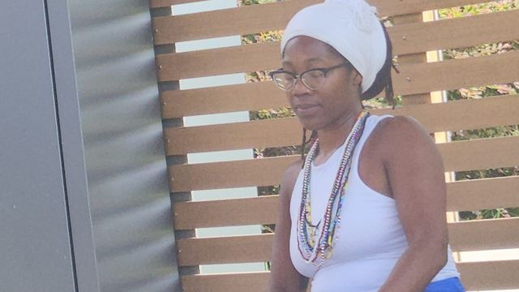
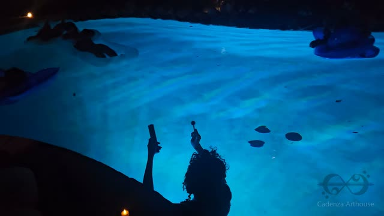

Watch
Films from Houston's yoga community. Each one plays on YouTube.
-

Sunday Yoga in Emancipation Park
Aisha K. Shahid's Sunday morning Empowerment Yoga class in Emancipation Park, start to finish. Roll out a mat and follow along: alternate nostril breathing, a seated flow, floor work, standing stretches and a closing meditation.
-

Floating Sound Bath
Crystal singing bowls and live flute over water, recorded live. A guided opening of breath and light leads into twenty-five minutes of unbroken sound.